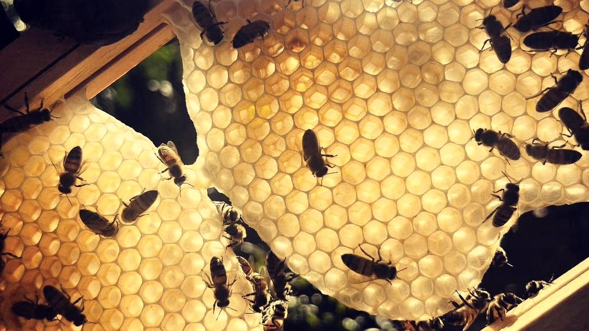
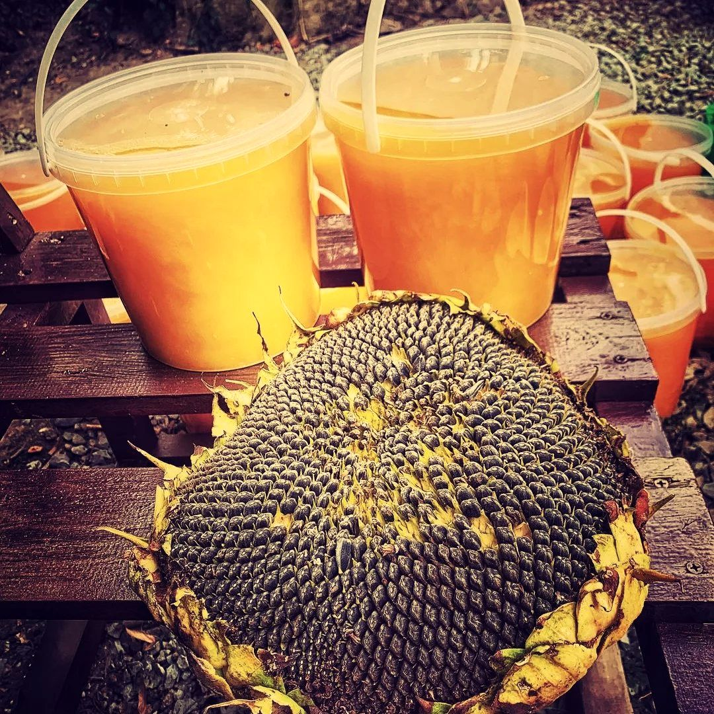
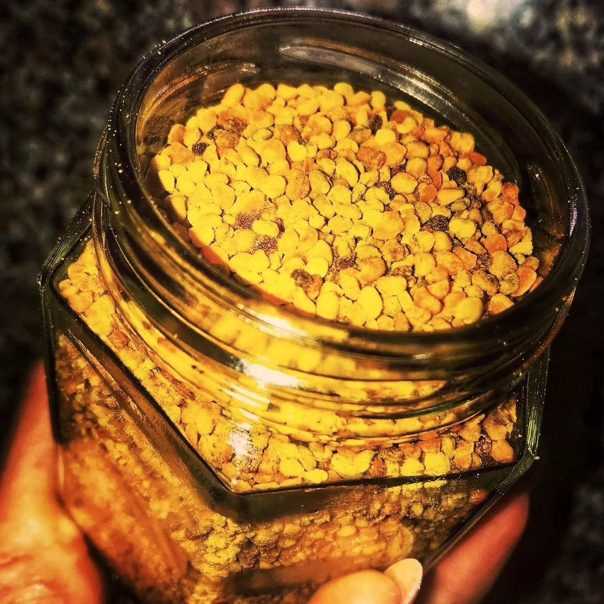
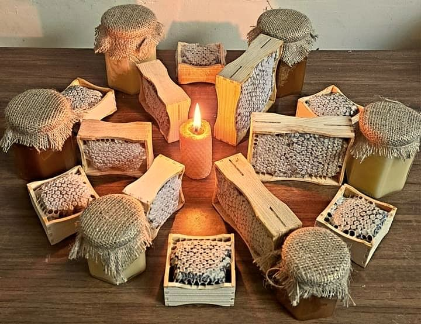
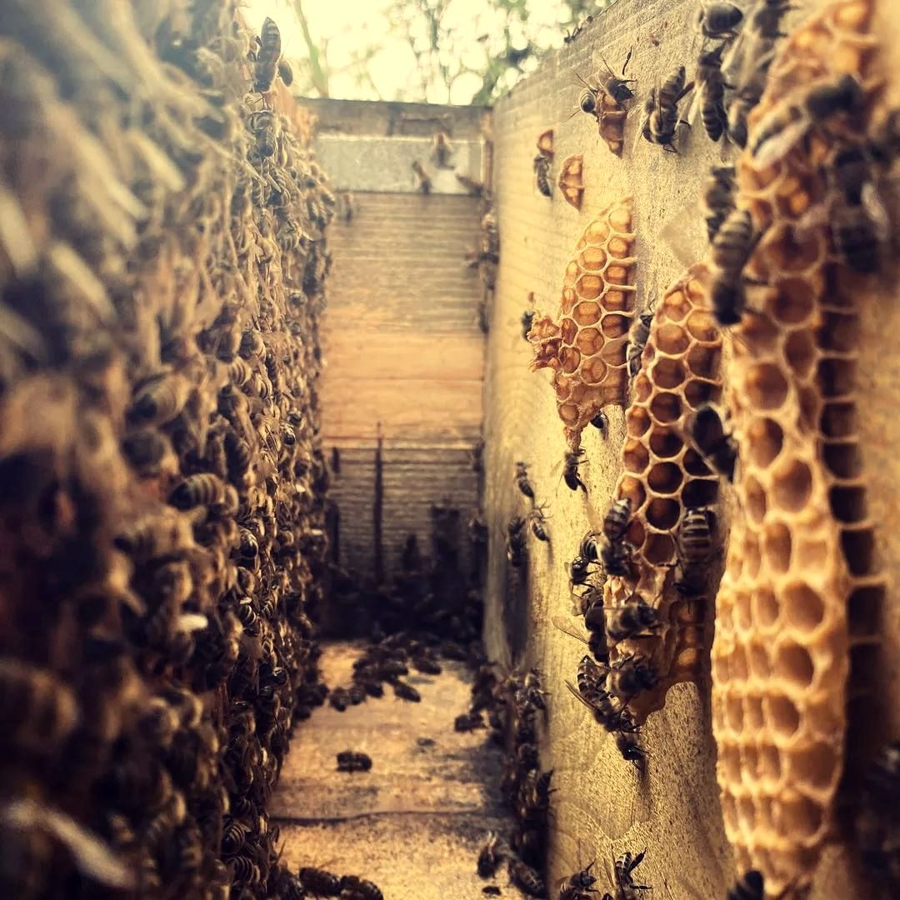
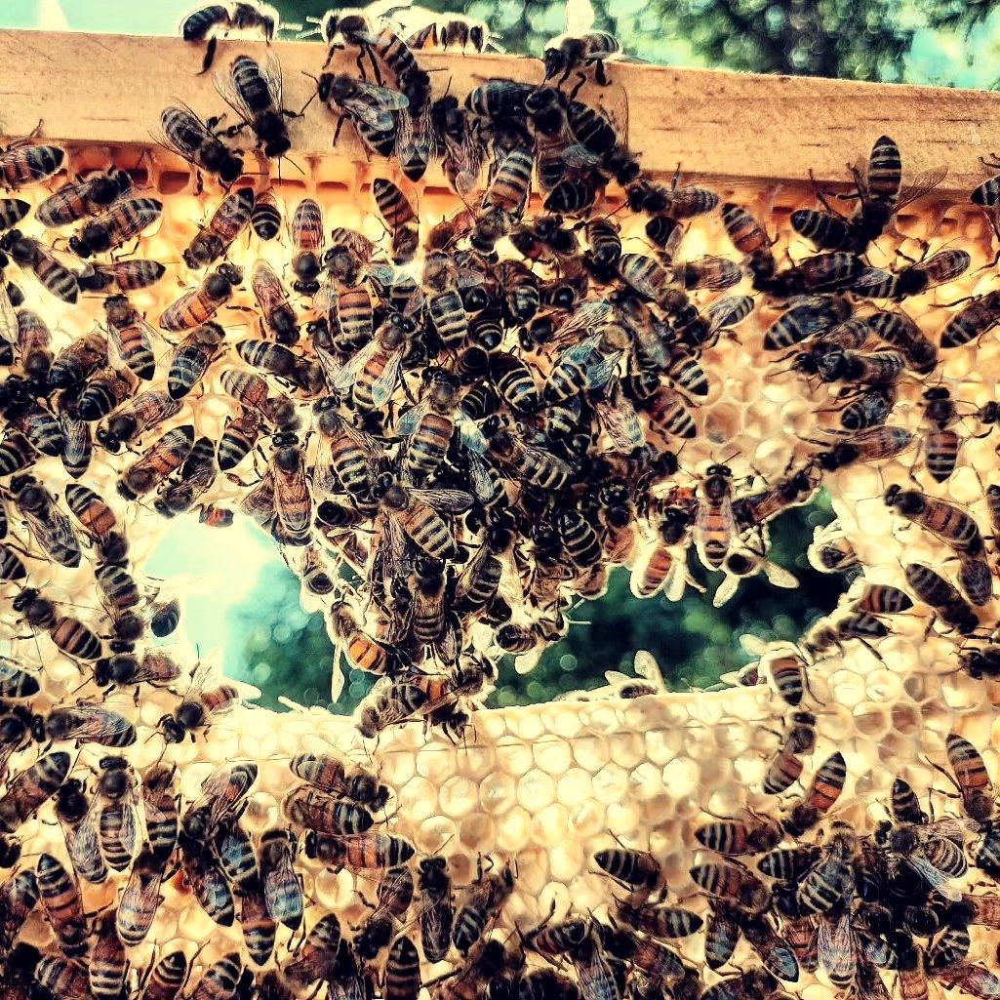

Пасіка, мед і бджоли: як усе влаштовано в Гурівці
Я пасічник із Гурівки на Кіровоградщині. Тут я розповідаю, як живе моя пасіка: що цвіте навколо, коли ми качаємо мед і чому він щороку виходить різним. Без реклами й продажів, лише те, що бачу біля вуликів щодня.
Що дає пасіка






Пасіка серед лісу і полів
Мої вулики стоять серед акацій. Навколо поля й ліс. Акація росте просто між вуликами: у цвітіння вона вся в білому, і бджоли працюють у неї над головою. Бджоли літають по нектар у ці місця від весни до осені, і мед з пасіки виходить таким, що цвіте поруч: що в полі та лісі, те й у банці.
Рік на пасіці
Навесні я оглядаю бджолині сім’ї, влітку стежу за медозбором і качаю мед, восени готую бджіл до зими, а взимку даю їм спокій. Сезон меду складається так. Першою, на початку літа, цвіте акація: з неї виходить світлий ніжний мед. Потім іде різнотрав’я, усе, що цвіте в полі та в лісі. У серпні настає черга соняшника. Липа дає нектар рідко, а ріпак і гречка трапляються лише тоді, коли поруч їх посіяли.
Хто живе у вулику
Одна бджолина сім’я — це матка, тисячі робочих бджіл і влітку трутні. Робочі бджоли діляться обов’язками: годують личинок, будують стільники, охороняють льоток і носять нектар. Жодна з них не працює сама, і мед — це результат роботи всієї сім’ї.
Як із нектару стає мед
Мед з’являється не одразу. Бджола приносить у вулик нектар, інші бджоли передають його одна одній, а потім крилами проганяють зайву воду. Коли мед готовий, його запечатують воском. Мед у стільниках — це мед, який лишили запечатаним у рамці, такий, як його зробили бджоли.
Чому мед щороку різний
Мед — не фабричний продукт, а підсумок погоди й польового сезону. Посуха, холодний травень чи дощі під час цвітіння змінюють і кількість, і смак. Буває, що за весь сезон виходить лише одна відкачка. Я не підганяю сорт під очікування: який сезон, такий і мед.
Три речі, які варто знати про мед з пасіки
- Сорт залежить від року й місця, а не від бажання пасічника.
- Мед, який зацукрився, не зіпсувався. Це звичайна кристалізація, про неї є окрема стаття.
- Питайте, коли і де відкачано мед. Чесний пасічник відповість без вагань.
Чим цей сайт відрізняється
У пошуку по пасіці здебільшого вітання з Днем пасічника, довідники для початківців і магазини. Мені бракувало живого щоденника з невеликої пасіки: з датами, фото і розповіддю, що було цього сезону. Тут усе від першої особи: що є в продуктах пасіки й чим їх цінують. Я не блогер і не експерт, просто людина з пасікою.